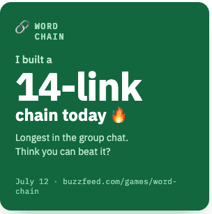
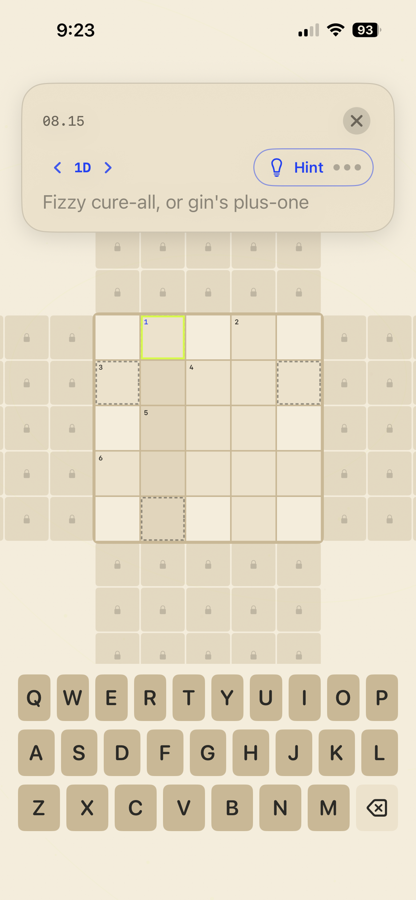
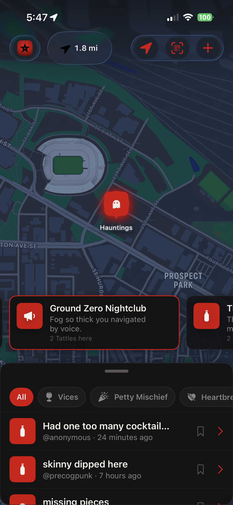

Nathan O'Brien — working demos & case studies
Prepared for the Luxury Presence conversation · Aug 3, 2026 · Minneapolis, MN · linkedin.com/in/nathanhunsaker · n8plusus@gmail.com
⬇ Download résumé (PDF)🎨 Generative media & automated sharing
(a) Dynamic image-template platform GEN MEDIA LeadFullstack
Server-side React templates rendered headlessly into composited share images at scale — the engine behind automated social posts and personalized quiz share cards at a major digital-media company.

(b) Tag Yourself — personalized share cards GEN MEDIA LeadFullstack
Shipped consumer feature: quiz results become personalized, generated share images. Won its A/B test decisively.


(c) Turnkey sharing — self-serve integration BOTH SoloDesign/UXFullstack
Turned the proven share-artifact pattern into a paved road: an internal qualifier + contract so any team could integrate generated share artifacts into their own surface without my team in the loop.

🤖 AI systems in production
(d) AI support triage — agentic, human-gated BOTH SoloFullstack
An agent that took over support-ticket triage: classifies handling + routing, then a gated investigator agent reads the live system, code, telemetry and docs to draft the fix and reply — a human approves every call.
(e) Agentic framework migration & modernization PLATFORM SoloDesign/UXFullstack
Designed an agent loop that migrated a decade-old Python UI service to Next.js — self-verified every change, paused only at real blockers, every decision logged.

🛠 Publishing-platform craft
(f) PubHub — social publishing platform PLATFORM LeadDesign/UX (partial)
Owned the frontend for 8+ years: the internal platform a major media company's social team used to publish across six networks.


(g) Callout — WYSIWYG promotions admin PLATFORM LeadDesign/UX (partial)
Built from scratch in Next.js: non-engineers compose audience-targeted promotions with a live preview driven by the same production renderer that serves readers.


🎮 Games built with Agentic Workflow process
(h) woords — an infinite crossword (iOS) GEN MEDIA SoloDesign/UXFullstack
"A crossword with no edge." SwiftUI, 564 automated tests, TestFlight beta; season storytelling with generated art direction. Core mechanic is patent-pending (happy to discuss under the hood in person).


{kind=link}
🏭 Metatoy — my AI-native studio (2026)
(j) TattleTown — location-based UGC (iOS) BOTH SoloDesign/UXFullstack
Drop stories on real places. Live production API, AI moderation pipeline, push, web share pages, Dynamic Island compass. 20-screen live feature tour:

(k) The software factory BOTH SoloFullstack
How one engineer ships 4 products across 6 repos: spec-first planning, persona-cast agent pods, model-tiered fan-out, screenshot/sim verification skills, a measured ledger, and a private studio operating layer (Coach OS) — all bespoke, humans own every gate.